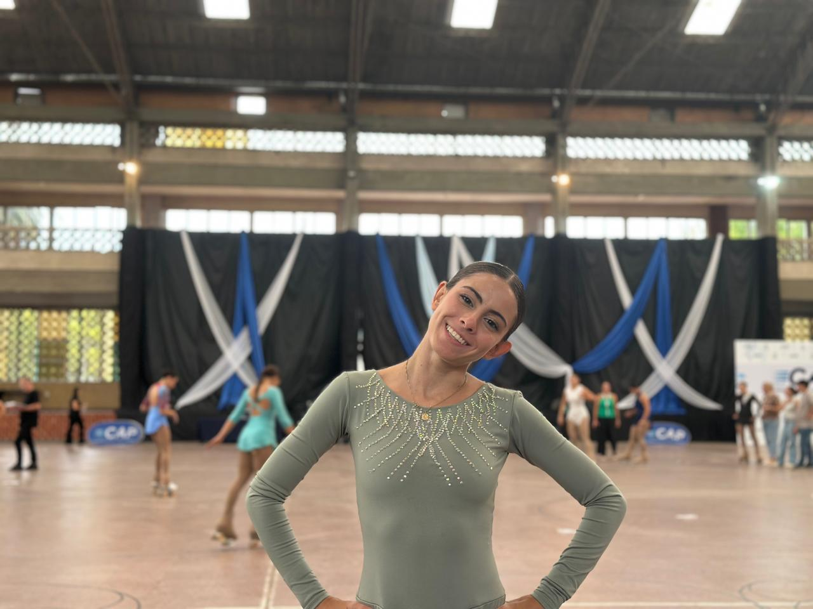
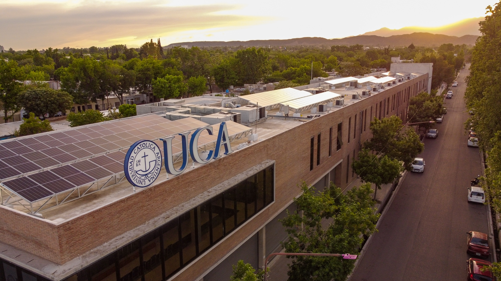
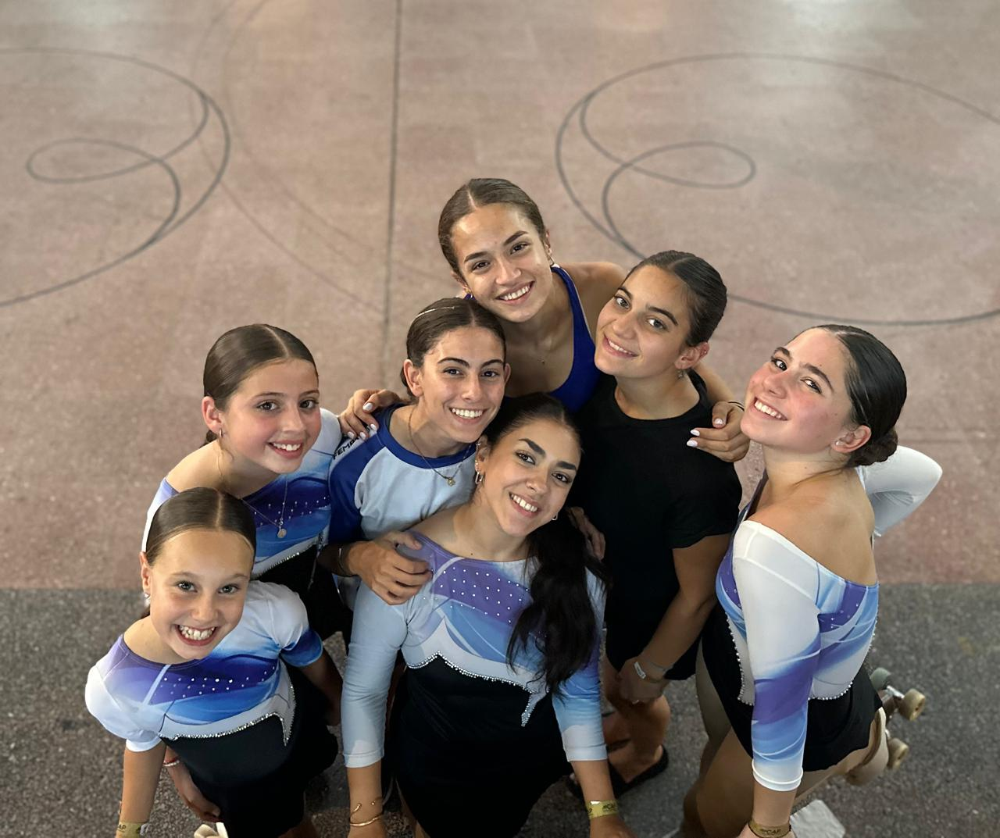

¡Hola! Soy Nazarena Bordallo, tengo 21 años. Soy una persona muy activa, me gusta estar haciendo cosas siempre. Soy fanatica de la musica, las fotos, el mate y juntarme con mis amigos y familia.

Actualmente soy estudiante de la carrera de comunicación digital en la universidad catolica argentina. Trabajo como comunity managerdonde me encargo de generar ideas, producir contenido y gestionar redes sociales, especialmente en el ámbito deportivo para la federación mendocina de patinaje. Disfruto mucho estar frente a cámara, hacer entrevistas y contar historias, y busco seguir desarrollándome en medios y proyectos creativos.

Mi hobbie desde los dos años es el patinaje artistico. Actualmente entreno en el Club Andes Talleres, donde también formo parte del seleccionado mendocino y recientemente viajé a Buenos Aires a competir. Ahi comparti con amigas y otras chicas de diferentes provincias.
